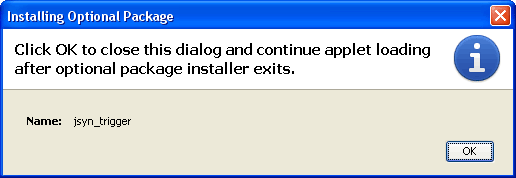

Important - On the next page, you will see several dialog boxes from Sun asking you to click "Yes" or "OK". The third one will look something like this:

When you see that third dialog, please wait until after you see another larger window appear. That larger window will download the 124KB JSyn plugin library.
When that larger window is finished and closes by itself, then you can click "OK".
If you click "OK" too soon then the JSyn Library may not be downloaded completely and you will get a "JSyn Library Missing" message.